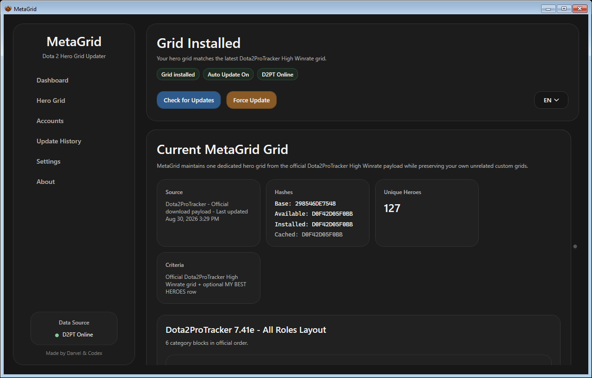
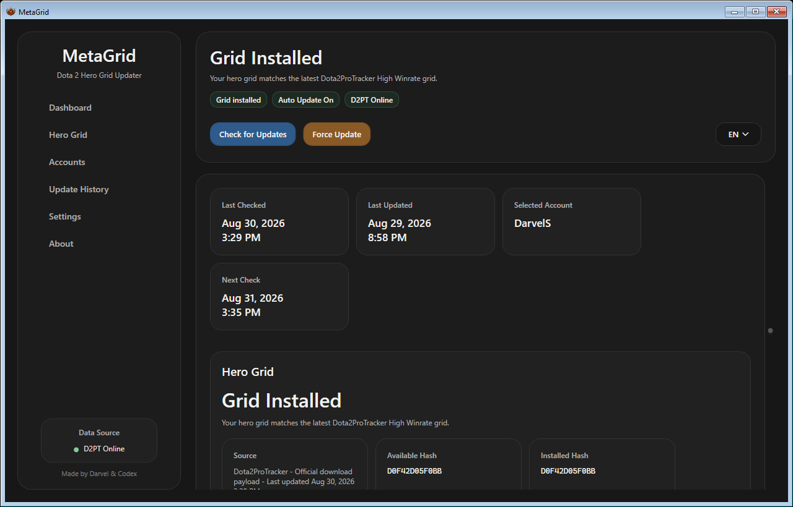
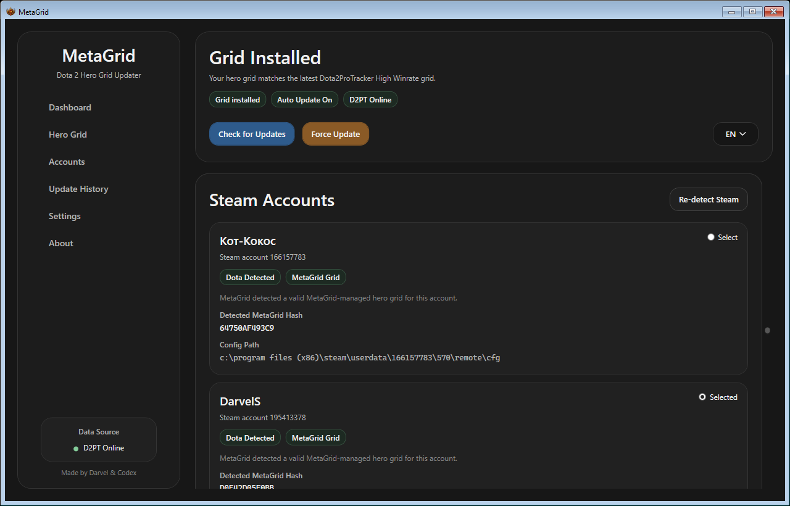
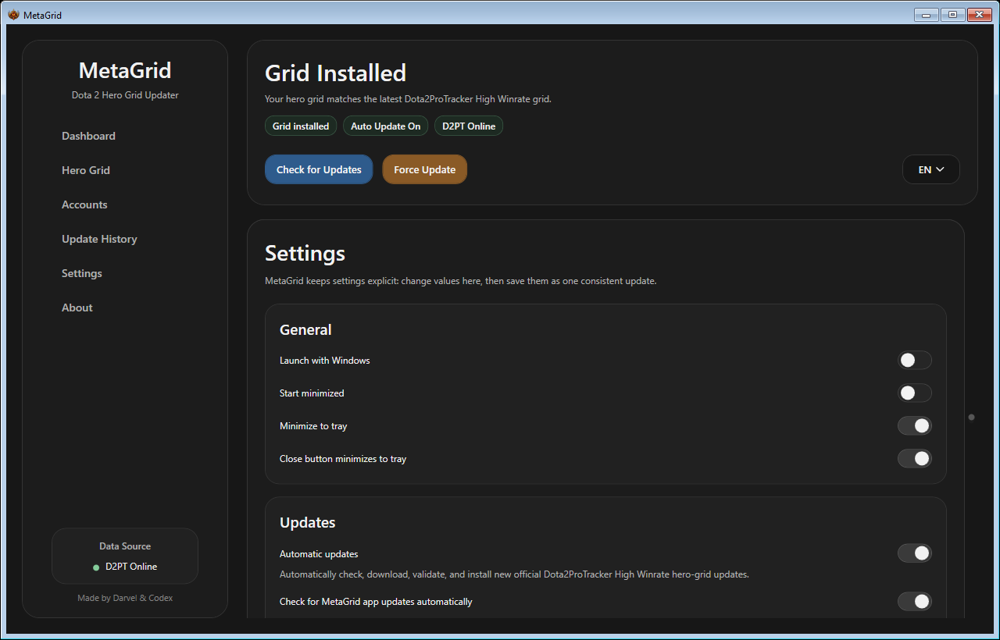

Free Windows app for Dota 2 players
A smarter hero grid for Dota 2
MetaGrid keeps your custom Dota 2 hero grid synchronized with current Dota2ProTracker High Winrate data and can add a personalized MY BEST HEROES row from your public OpenDota statistics.

Real MetaGrid screenshot from the desktop app
Built around the official High Winrate grid.
Checks for changes and keeps the managed grid current.
Optional personalization from public OpenDota stats.
Backup, verification, and rollback safeguards included.
Free Windows x64 release under MPL-2.0.
English and Russian interface support in the app and site.
Why players use MetaGrid
Built for practical updates, not manual hero-grid busywork
Current Meta Grid
Retrieves the official Dota2ProTracker High Winrate grid and keeps the MetaGrid-managed layout synchronized when the source changes.
MY BEST HEROES
Adds up to seven qualifying heroes from your public OpenDota match statistics: last 90 days, 10+ games, 53%+ win rate.
Public match data is required. Private or unavailable OpenDota statistics simply disable personalization while the standard grid still works normally.
Automatic Grid Updates
Checks for updated Dota2ProTracker data and can keep the selected Dota grid current on a schedule.
Safe Installation
Preserves unrelated custom grids and uses backup, verification, and rollback safeguards around managed writes.
Built-in MetaGrid Updates
Starting with v0.1.1, MetaGrid can check for new application releases and install compatible updates through its built-in updater.
English / Russian UI
The app supports both English and Russian, making setup and maintenance easier for more players.
Personalization
MY BEST HEROES turns public match history into a focused personal row
When public OpenDota statistics are available, MetaGrid can analyze the last 90 days and add up to seven qualifying heroes directly into the All Roles layout.
- Last 90 days
- 10+ matches
- 53%+ win rate
- Up to 7 heroes
If profile statistics are private or unavailable through OpenDota, MetaGrid still works normally with the standard Dota2ProTracker grid. Only the personalized row is skipped.


How it works
From download to synchronized grid in three steps
Download MetaGrid
Install the latest Windows x64 release from GitHub Releases.
Select your Steam account
MetaGrid locates supported Dota 2 account and grid paths for the selected user.
Install and stay updated
Install the current grid and let MetaGrid keep it synchronized. If public OpenDota data is available, MY BEST HEROES is composed into the All Roles layout.
Application updates
MetaGrid now keeps itself updated too
Version 0.1.1 adds a built-in updater that checks GitHub Releases, verifies downloads with SHA-256, and uses a separate updater flow for safer replacement and rollback.
If you are on v0.1.0, download v0.1.1 manually once. Future compatible versions can then be installed from inside MetaGrid.
Security details
The primary user-facing flow stays simple, while the updater performs verification before replacement and supports safer staged recovery if something goes wrong.

Download
Download MetaGrid for Windows
Start with the latest release and keep both the app and your managed Dota 2 hero grid up to date from one place.
Latest version:
v0.1.1
Platform:
Windows x64
Price:
Free
License:
MPL-2.0
FAQ
Questions people ask before installing
What is MetaGrid?
MetaGrid is a free Windows app for Dota 2 that keeps a managed hero grid synchronized with current Dota2ProTracker High Winrate data.
Is MetaGrid free?
Yes. MetaGrid is free and open source under the MPL-2.0 license.
Does it modify my existing custom grids?
MetaGrid preserves unrelated custom grids where supported and wraps managed changes with backup, verification, and rollback safeguards.
Where does the meta data come from?
The primary source is the official Dota2ProTracker High Winrate hero grid.
How does MY BEST HEROES work?
It uses public OpenDota statistics from the last 90 days and includes heroes with at least 10 games and at least 53% win rate, up to a maximum of seven.
Why is MY BEST HEROES not appearing?
Most often, public match data is unavailable or does not meet the qualification rules. The normal Dota2ProTracker-based grid still works either way.
Does my Dota profile need to be public?
Public or otherwise available OpenDota match statistics are required only for the personalized MY BEST HEROES row.
Do I need an OpenDota account?
No separate OpenDota account is required. MetaGrid only needs public player statistics to be available through OpenDota.
Does MetaGrid update automatically?
Yes. MetaGrid can check for updated Dota2ProTracker grid data and keep the selected managed grid current on a schedule.
Does MetaGrid itself update automatically?
Starting with v0.1.1, MetaGrid includes a built-in application updater. Users on v0.1.0 need to install v0.1.1 manually once first.
Do I need to install .NET?
No separate .NET installation is required for the packaged v0.1.1 Windows x64 release.
What Windows setup is supported?
MetaGrid is packaged for Windows x64. The repository also lists Microsoft Edge WebView2 Runtime as a system requirement.
Is the source code public?
Yes. The source is published at github.com/darvels/metagrid, and issues and feature requests are welcome there.